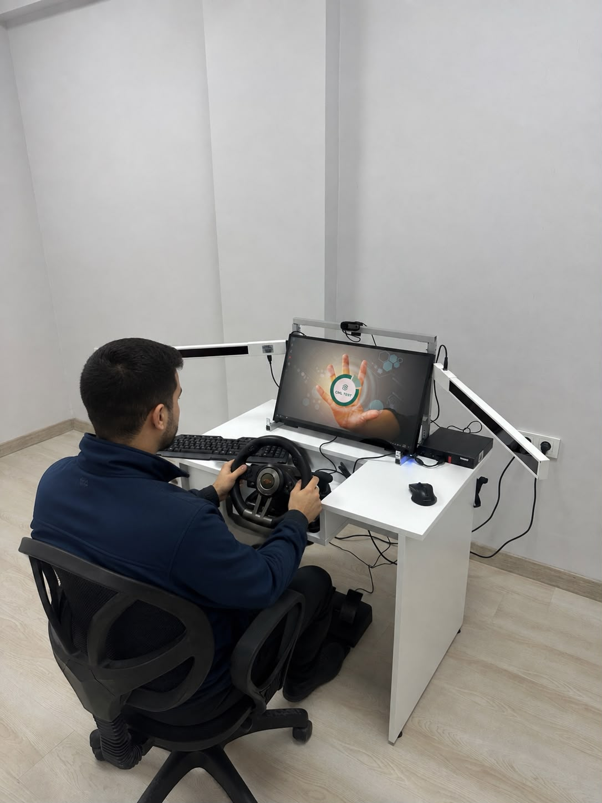

Sağlık Bakanlığı Onaylı Test Simülatörü
Merkezimizde en son teknoloji ürünü psikoteknik değerlendirme cihazları kullanılmaktadır. Bu sayede dikkat, refleks, algı, muhakeme ve koordinasyon yetenekleriniz sıfır hata payı ile dijital ortamda ölçümlenir.
1 Saatlik Detaylı Test Süreci
Anında e-Devlet Onayı

Psikoteknik Değerlendirme Süreci
Güvenilir, hızlı ve yasal mevzuata tam uyumlu hizmet anlayışı
Simülatör Testi
Onaylı cihazlarımızda dikkat, algı, refleks ve koordinasyon yeteneklerinizi ölçen testler uygulanır.
Deneyimli Psikolog
Test süreciniz alanında deneyimli psikologlarımız eşliğinde ve rehberliğinde gerçekleştirilir.
e-Devlet Onaylı Rapor
Testin ardından raporunuz e-Devlet sistemine işlenir. Aynı gün belgenize erişebilirsiniz.
Sıkça Sorulan Sorular & Bilgi Rehberi
Psikoteknik ve SRC belgeleri hakkında tüm merak ettikleriniz
Psikoteknik belgesi, ticari araç (taksi, otobüs, minibüs, kamyon, kamyonet vb.) kullanan sürücülerin bedensel ve zihinsel durumlarının sürücülük yapmaya uygun olduğunu gösteren Sağlık Bakanlığı onaylı bir rapordur. 1 saat süren simülatör testi ve psikolog görüşmesi sonrasında verilir.
Psikoteknik Değerlendirme Raporu, alındığı tarihten itibaren 5 (beş) yıl süreyle geçerlidir. 5 yılın sonunda ticari araç kullanmaya devam edecek sürücülerin testi tekrarlayarak belgelerini yenilemesi gerekmektedir.
Hem ilk defa alacaklar hem de süresi dolup belgesini yeniletecek olan sürücülerimiz için süreç aynıdır: Ehliyet ve Kimlik kartınızla merkezimize gelip 1 saatlik simülatör testine girmeniz yeterlidir. Sınav veya ön hazırlık gerektirmez.
Evet, kesinlikle alabilirsiniz. SRC belgenizin olup olmaması Psikoteknik belgesi almanıza engel değildir. SRC ve Psikoteknik birbirinden bağımsız belgelerdir; hangisini önce alacağınızın bir önemi yoktur.
SRC belgeleri Mesleki Yeterlilik Belgeleridir ve kapsadığı alanlar şunlardır:
SRC belgeleri Milli Eğitim Bakanlığı (MEB) onaylı SRC kurslarından ve yapılan sınav sonucunda alınır.
Artık fiziksel kart basılmamaktadır. Merkezimizde testinizi tamamladıktan sonra belgeniz anında e-Devlet sistemine yüklenir. e-Devlet kapısına giriş yapıp arama kutusuna "Psikoteknik Değerlendirme Raporu Sorgulama" yazarak belgenizi görüntüleyebilir, PDF çıktısını alabilir veya polis kontrollerinde gösterebilirsiniz.
İzmir Psikoteknik Hizmet Bölgelerimiz & Ulaşım
İzmir'in tüm ilçelerinden Karabağlar'daki Sağlık Bakanlığı onaylı merkezimize kolayca ulaşabilir, aynı gün psikoteknik raporunuzu alabilirsiniz.
📍 Yunus Emre Mah. Şht. Pilot Volkan Koçyiğit Blv. No:5 Kat:3 Daire:6 Karabağlar / İzmir